Corsi e workshop di ceramica a Torino e dintorni
Corsi di ceramica, tornio, modellazione, decorazione e kintsugi a Torino, Cuneo e dintorni: date, prezzi e come iscriversi.
Cerca tutti i workshop74 attività in programma · aggiornato il 20 novembre 2026
 dal18novCeramicaCorso di ceramica: tornio o modellatoda mercoledì 18 novembre a martedì 22 dicembreAurora (TO) · 100 € per 4 incontricon Aquarius Ceramica
dal18novCeramicaCorso di ceramica: tornio o modellatoda mercoledì 18 novembre a martedì 22 dicembreAurora (TO) · 100 € per 4 incontricon Aquarius Ceramica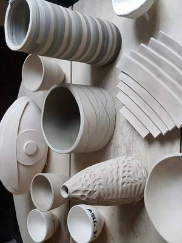
ven6novCeramicaCrea la tua tazza: workshop con Rudda venerdì 6 novembre a domenica 29 novembre, 10:00–12:00San Salvario (TO) · 48 €con Rud per Pottery Lab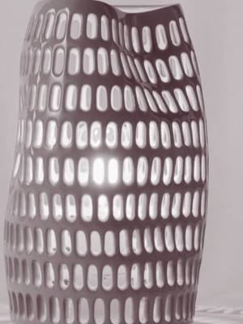
sab14novCeramicaPottery Workshop: lanterna traforatada sabato 14 novembre a sabato 21 novembre, 18:00–20:30Cuneo (CN)con Gioie di Creta ven20novCeramicaSpritz and Pottery: aperitivo e ceramicavenerdì 20 novembre, 18:30–21:00Torinocon Spazio IAIA
ven20novCeramicaSpritz and Pottery: aperitivo e ceramicavenerdì 20 novembre, 18:30–21:00Torinocon Spazio IAIA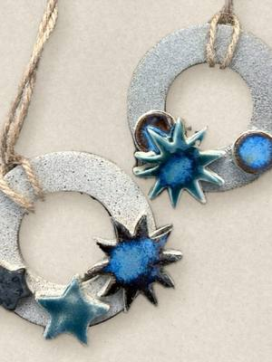
ven20novCeramicaWorkshop di ceramica: ghirlande di Natalevenerdì 20 novembre, 19:00–20:30Centro (TO) · 60 €con Unomi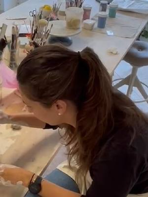
sab21novCeramicaColazione e ceramica: mattina in laboratoriosabato 21 novembreManta (CN) · 60 €con Laboratorio di Ceramica a Manta sab21novCeramicaArgilla Rituale: ciotola incantatoriasabato 21 novembreVanchiglia (TO) · 45 €con Maccu per Maniera Factory
sab21novCeramicaArgilla Rituale: ciotola incantatoriasabato 21 novembreVanchiglia (TO) · 45 €con Maccu per Maniera Factory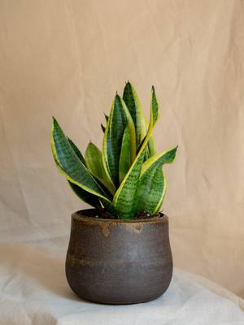
sab21novCeramicaCrea il tuo regalo: oggetto in ceramicasabato 21 novembre, 10:30–12:30Borgo Vittoria (TO) · Offerta liberacon Giada Biagioni Ceramiche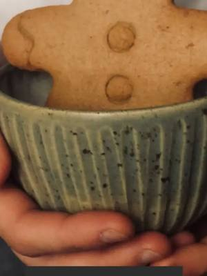
sab21novCeramicaWorkshop di ceramica: set da tè in gressabato 21 novembre, 14:30–17:00Vanchiglietta (TO)con QB Creazioni sab21novCeramicaArgilla per tutti: il primo pezzosabato 21 novembre, 15:00–17:00Santa Rita (TO)con Rossella Eula per Anima Atelier
sab21novCeramicaArgilla per tutti: il primo pezzosabato 21 novembre, 15:00–17:00Santa Rita (TO)con Rossella Eula per Anima Atelier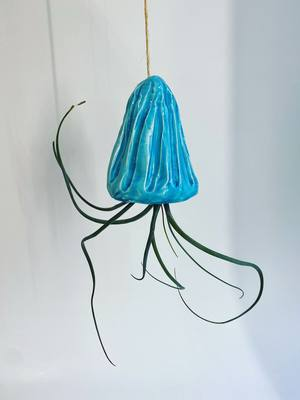
sab21novCeramicaTillandsia: vasi sospesi in ceramicasabato 21 novembre, 16:00–18:00San Salvario (TO) · 48 €con Pottery Lab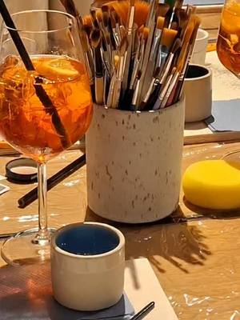
sab21novCeramicaAperitivo ceramico: palline di Natalesabato 21 novembre, 19:00–21:30Grugliasco (TO) · 35 €con Spazio IAIA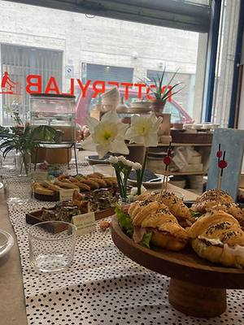
dom22novCeramicaPottery Brunch: argilla e brunchdomenica 22 novembre, 09:30–11:30San Salvario (TO) · 55 €con Pottery Lab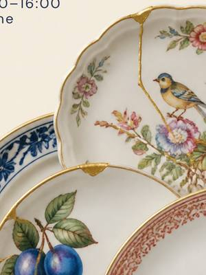
dom22novCeramicaWorkshop di kintsugi: porcellane vintagedomenica 22 novembre, 10:00–12:00Torino · esauritocon Komorebi Lab per ArtTo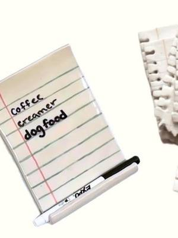
lun23novCeramicaFoglietto: memo magnetico in ceramicalunedì 23 novembre, 18:30–20:30Vanchiglia (TO) · 40 €con Il Nicchio di via Monti- mar24novCeramicaArgilla per tutti: il primo pezzomartedì 24 novembre, 15:00–17:00Santa Rita (TO)con Rossella Eula per Anima Atelier
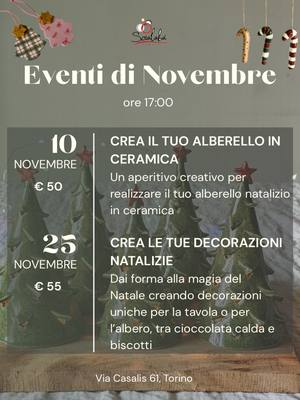
mer25novCeramicaWorkshop di Natale: decorazioni in ceramicamercoledì 25 novembre, 17:00Cit Turin (TO) · 55 €con Scialabà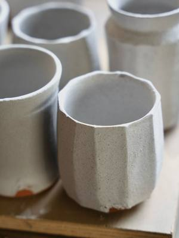
dal11novCeramicaCorso di ceramica: dal disegno all’argillada mercoledì 11 novembre a mercoledì 16 dicembre, ogni mercoledì, 18:30–20:30Cuneo (CN) · 180 € per 6 lezionicon Mario Ghibaudo per Atelier Crea-Arti mer25novCeramicaWorkshop di gioielli kintsugi: merenda orientalemercoledì 25 novembre, 18:30–20:30Centro (TO) · 55 €con Hanami Design
mer25novCeramicaWorkshop di gioielli kintsugi: merenda orientalemercoledì 25 novembre, 18:30–20:30Centro (TO) · 55 €con Hanami Design mer25novCeramicaPortafoto: tre cornici in ceramicamercoledì 25 novembre, 18:30–20:30Vanchiglia (TO) · 40 €con Il Nicchio di via Monti
mer25novCeramicaPortafoto: tre cornici in ceramicamercoledì 25 novembre, 18:30–20:30Vanchiglia (TO) · 40 €con Il Nicchio di via Monti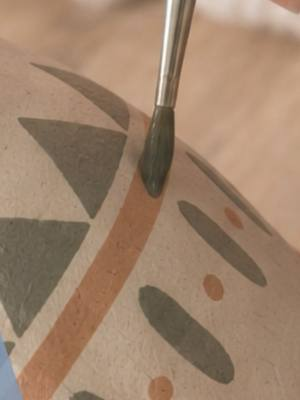
gio26novCeramicaDecora ceramica: pittura liberagiovedì 26 novembre, 16:00–21:00Torinocon Spazio IAIA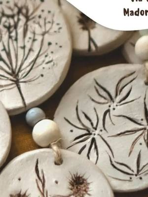
gio26novCeramicaWorkshop di modellazione: forme della naturagiovedì 26 novembre, 18:00–20:30Cuneo (CN) · 25 €con Cooperativa Il Melograno ven27novCeramicaAperitivo e ceramica: serata in laboratoriovenerdì 27 novembreManta (CN) · 60 €con Laboratorio di Ceramica a Manta
ven27novCeramicaAperitivo e ceramica: serata in laboratoriovenerdì 27 novembreManta (CN) · 60 €con Laboratorio di Ceramica a Manta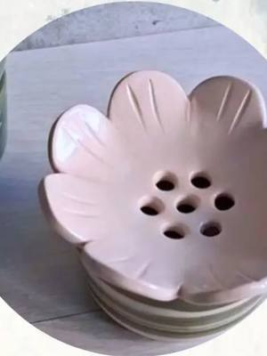
ven27novCeramicaWorkshop di saponi: saponette e portasaponevenerdì 27 novembre, 18:00–20:00Asti (AT) · 45 €con Naturali Creazioni per Naif Laboratorio Artistico ven27novCeramicaAperipottery: lastra e colombinovenerdì 27 novembre, 18:30–20:30San Salvario (TO)con Pottery Lab
ven27novCeramicaAperipottery: lastra e colombinovenerdì 27 novembre, 18:30–20:30San Salvario (TO)con Pottery Lab- ven27novCeramicaSpritz and Pottery: aperitivo e ceramicavenerdì 27 novembre, 18:30–21:00Torinocon Spazio IAIA
 sab28novCeramicaWorkshop di tornio: lavorare in multiplisabato 28 novembreSan Donato (TO)con Chu Lab
sab28novCeramicaWorkshop di tornio: lavorare in multiplisabato 28 novembreSan Donato (TO)con Chu Lab sab28novCeramicaTornio Full Immersion: quattro ore al torniosabato 28 novembreSan Donato (TO)con Chu Lab
sab28novCeramicaTornio Full Immersion: quattro ore al torniosabato 28 novembreSan Donato (TO)con Chu Lab sab28novCeramicaColazione e ceramica: mattina in laboratoriosabato 28 novembreManta (CN) · 60 €con Laboratorio di Ceramica a Manta
sab28novCeramicaColazione e ceramica: mattina in laboratoriosabato 28 novembreManta (CN) · 60 €con Laboratorio di Ceramica a Manta- sab28novCeramicaArgilla Rituale: bolisabato 28 novembreVanchiglia (TO) · 45 €con Maccu per Maniera Factory
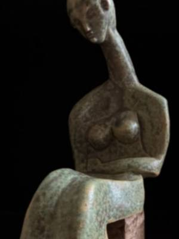
sab28novCeramicaScolpire le nuvole: scultura in argillasabato 28 novembre, 10:00–12:30San Salvario (TO) · 50 €con Ermanno Cirulli per Pottery Lab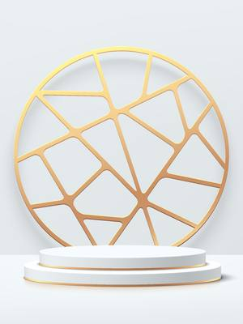
sab28novCeramicaEsperienza Kintsugi: riparare con l’orosabato 28 novembre, 14:30–18:30San Salvario (TO) · 120 €con Pottery Lab con Diletta sab28novCeramicaClay & Christmas: decorazioni in ceramicasabato 28 novembre, 14:30–17:00Vanchiglietta (TO)con QB Creazioni
sab28novCeramicaClay & Christmas: decorazioni in ceramicasabato 28 novembre, 14:30–17:00Vanchiglietta (TO)con QB Creazioni sab28novCeramicaWorkshop di ceramica: addobbi di Natalesabato 28 novembre, 14:30–18:30Villar Perosa (TO) · 60 €con Simona di Terraferma Ceramiche per Riflessi di Casa
sab28novCeramicaWorkshop di ceramica: addobbi di Natalesabato 28 novembre, 14:30–18:30Villar Perosa (TO) · 60 €con Simona di Terraferma Ceramiche per Riflessi di Casa- sab28novCeramicaWorkshop di saponi: saponette e portasaponesabato 28 novembre, 16:00–18:00Asti (AT) · 45 €con Naturali Creazioni per Naif Laboratorio Artistico
 sab28novCeramicaAperilla: set da aperitivo in argillasabato 28 novembre, 17:00–19:00Vanchiglia (TO) · 40 €con Il Nicchio di via Monti
sab28novCeramicaAperilla: set da aperitivo in argillasabato 28 novembre, 17:00–19:00Vanchiglia (TO) · 40 €con Il Nicchio di via Monti dom29novCeramicaMaschera in argilla: un personaggio animaledomenica 29 novembre, 10:30–12:30Borgo Vittoria (TO) · 55 €con Giada Biagioni Ceramiche
dom29novCeramicaMaschera in argilla: un personaggio animaledomenica 29 novembre, 10:30–12:30Borgo Vittoria (TO) · 55 €con Giada Biagioni Ceramiche dom29novCeramicaWorkshop di gioielli: kintsugi su ceramicadomenica 29 novembre, 11:00–13:00Santa Rita (TO)con Hanami Design per Anima Atelier
dom29novCeramicaWorkshop di gioielli: kintsugi su ceramicadomenica 29 novembre, 11:00–13:00Santa Rita (TO)con Hanami Design per Anima Atelier- dom29novCeramicaDecora il tuo Natale: ceramiche nataliziedomenica 29 novembre, 14:00San Salvario (TO) · 25 € · esauritocon Pottery Lab
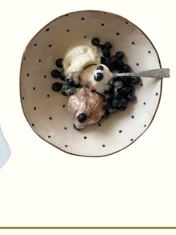
dom29novCeramicaFree Clay: una ciotola in un’oradomenica 29 novembre, 14:30–18:30Vanchiglia (TO) · 25 €con Il Nicchio di via Monti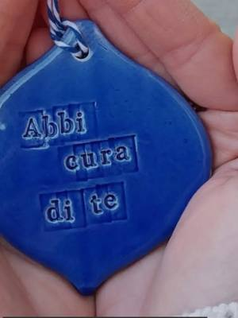
dom29novCeramicaClay & Christmas: decorazioni in ceramicadomenica 29 novembre, 14:30–17:00Vanchiglietta (TO)con QB Creazioni dom29novCeramicaWorkshop di ceramica: addobbi di Nataledomenica 29 novembre, 16:00San Donato (TO)con Chu Lab
dom29novCeramicaWorkshop di ceramica: addobbi di Nataledomenica 29 novembre, 16:00San Donato (TO)con Chu Lab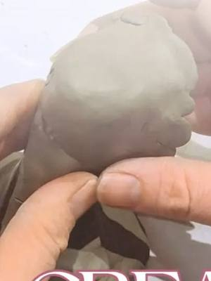
dom29novCeramicaScultura commemorativa: argilla e memoriadomenica 29 novembre, 16:00–18:30Chivasso (TO)con Gabriella Gastaldi Ferragatta per Centro Origine dom29novCeramicaOfficina del Natale: decorazioni in ceramicadomenica 29 novembre, 16:00–22:00Torino · 20 € all’oracon Spazio IAIA
dom29novCeramicaOfficina del Natale: decorazioni in ceramicadomenica 29 novembre, 16:00–22:00Torino · 20 € all’oracon Spazio IAIA dom29novCeramicaWorkshop di gioielli kintsugi: un gioiello doratodomenica 29 novembre, 16:30–18:30Pianezza (TO) · 55 €con Hanami Design
dom29novCeramicaWorkshop di gioielli kintsugi: un gioiello doratodomenica 29 novembre, 16:30–18:30Pianezza (TO) · 55 €con Hanami Design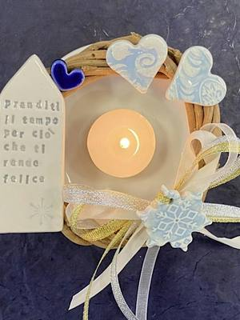
gio3dicCeramicaCeramiche a merenda: centrotavola di Natalegiovedì 3 dicembre, 17:30–19:30Chivasso (TO) · 25 €con Laboratorio Perlaluna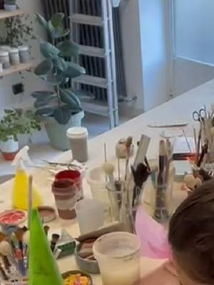
ven4dicCeramicaAperitivo e ceramica: serata di Natalevenerdì 4 dicembreManta (CN) · 60 €con Laboratorio di Ceramica a Manta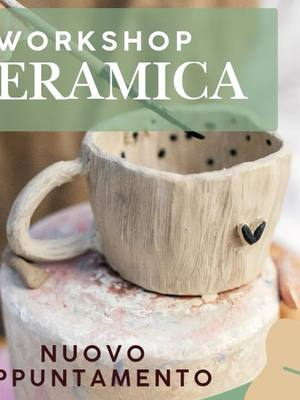
ven4dicCeramicaWorkshop di ceramica: tazza a lastravenerdì 4 dicembre, 18:30Borgaro Torinese (TO) · 45 €con Nikin House sab5dicCeramicaKintsugi contemporaneo: riparare con l’orosabato 5 dicembre, 10:00–13:00Torinocon Komorebi Lab
sab5dicCeramicaKintsugi contemporaneo: riparare con l’orosabato 5 dicembre, 10:00–13:00Torinocon Komorebi Lab- dom6dicCeramicaDecora il tuo Natale: ceramiche nataliziedomenica 6 dicembre, 13:30–15:30San Salvario (TO) · 25 € · esauritocon Pottery Lab
 mar8dicCeramicaKintsugi contemporaneo: oro e furoshikimartedì 8 dicembre, 10:00–13:00Bra (CN)con Komorebi Lab
mar8dicCeramicaKintsugi contemporaneo: oro e furoshikimartedì 8 dicembre, 10:00–13:00Bra (CN)con Komorebi Lab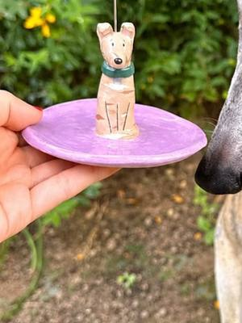
ven11dicCeramicaWorkshop di ceramica: miniature su piattinovenerdì 11 dicembre, 18:30Borgomanero (NO) · 59 €con Il Tami Lab per Creo Workshop sab12dicPer famiglieLaboratorio di tornio: argilla con mamma e papàsabato 12 dicembreSanta Rita (TO) · 25 € per bambino e genitorecon Bunbury
sab12dicPer famiglieLaboratorio di tornio: argilla con mamma e papàsabato 12 dicembreSanta Rita (TO) · 25 € per bambino e genitorecon Bunbury dal11genCeramicaCorso di ceramica: tornio o modellatoda lunedì 11 gennaioAurora (TO) · 200 € per 8 lezionicon Aquarius Ceramica
dal11genCeramicaCorso di ceramica: tornio o modellatoda lunedì 11 gennaioAurora (TO) · 200 € per 8 lezionicon Aquarius Ceramica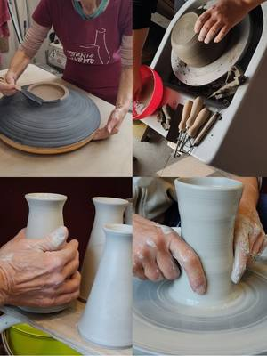
dal16genCeramicaCorso di ceramica: il ciclo del sabatoda sabato 16 gennaio a sabato 13 febbraio, ogni sabato, 09:30–12:30Aurora (TO)con Aquarius Ceramica datada definireAltroCascina Roccafranca: corsi della stagioneData da definireMirafiori (TO)con Cascina Roccafranca
datada definireAltroCascina Roccafranca: corsi della stagioneData da definireMirafiori (TO)con Cascina Roccafranca dataa sceltaCeramicaLezioni di ceramica: al tuo ritmoData a sceltaManta (CN) · 125 € per 4 lezionicon Laboratorio di Ceramica a Manta
dataa sceltaCeramicaLezioni di ceramica: al tuo ritmoData a sceltaManta (CN) · 125 € per 4 lezionicon Laboratorio di Ceramica a Manta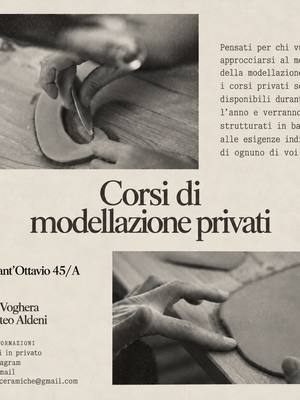
dataa sceltaCeramicaCorsi di modellazione privati: ceramicaData a sceltaVanchiglia (TO)con Maccu per Maniera Factory- dataa sceltaCeramicaLezioni di tornio: individualiData a sceltaVanchiglia (TO) · 45 € a lezionecon Ceramiche Musso per Maniera Factory
 dataa sceltaCeramicaPittura libera su ceramica: scegli e decoraData a sceltaVanchiglia (TO) · da 15 €con Naïf
dataa sceltaCeramicaPittura libera su ceramica: scegli e decoraData a sceltaVanchiglia (TO) · da 15 €con Naïf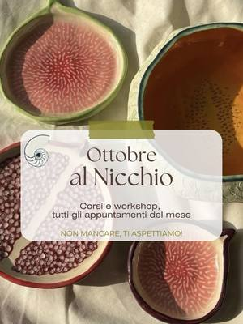
dataa sceltaCeramicaCorso di ceramica: modellazione e smaltiData a sceltaVanchiglia (TO) · 120 € per 4 lezionicon Il Nicchio di via Monti- dataa sceltaCeramicaCorso di tornio: lezioni per dueData a sceltaVanchiglia (TO) · 45 € a lezionecon Il Nicchio di via Monti
 dataa sceltaCeramicaCorsi di ceramica: tornio e modellatoData a sceltaSan Salvario (TO)con Openlab573
dataa sceltaCeramicaCorsi di ceramica: tornio e modellatoData a sceltaSan Salvario (TO)con Openlab573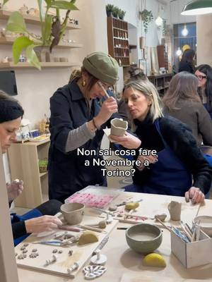
datada definireCeramicaWorkshop di ceramica: modellazione ed engobbiData da definireQuadrilatero (TO) · 50 € · esauritocon Ouimiel Studio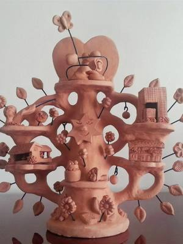
dataa sceltaCeramicaL’albero della vita: scultura in terracottaData a sceltaSan Salvario (TO) · 95 €con Pottery Lab con Marta Pais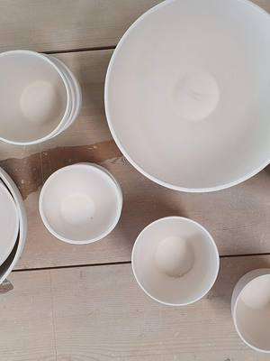
dataa sceltaCeramicaLaboratorio libero: ceramica in autonomiaData a sceltaSan Salvario (TO) · 50 € per 10 orecon Pottery Lab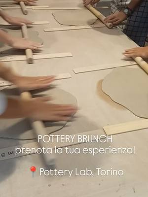
dataa sceltaCeramicaCorso di modellazione: lastra e colombinoOgni settimana, in più turniSan Salvario (TO) · 150 € per 4 lezionicon Pottery Lab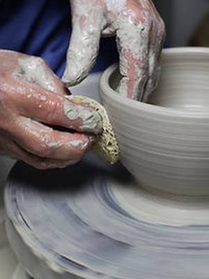
dataa sceltaCeramicaCorso di tornio: quattro incontriOgni martedì, mercoledì, giovedì o sabatoSan Salvario (TO) · 150 € per 4 lezionicon Pottery Lab con Roberta Dalpasso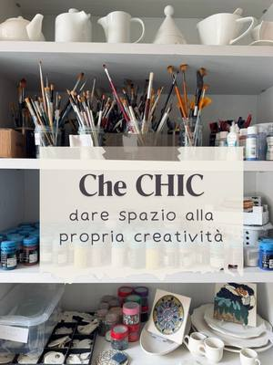
dataa sceltaCeramicaCorso di decorazione: ceramica dipintaData a sceltaCit Turin (TO)con Scialabà dataa sceltaCeramicaCorso di gioielli: porcellana e argillaData a sceltaCit Turin (TO) · 125 €con Scialabà
dataa sceltaCeramicaCorso di gioielli: porcellana e argillaData a sceltaCit Turin (TO) · 125 €con Scialabà- dataa sceltaCeramicaCorso di ceramica: lastra e tornioData a sceltaCit Turin (TO) · 120 €con Scialabà
- dataa sceltaCeramicaCorso di tornio: centratura e formeData a sceltaCit Turin (TO) · 120 €con Scialabà
 ognigioCeramicaIl tè delle cinque: decora una tazzaOgni giovedì, 17:00–18:30San Salvario (TO) · 25 €con Pottery Lab con Diletta
ognigioCeramicaIl tè delle cinque: decora una tazzaOgni giovedì, 17:00–18:30San Salvario (TO) · 25 €con Pottery Lab con Diletta dataa sceltaCeramicaCorso di tornio: ceramica per tutti i livelliOgni lunedì e mercoledì, 18:30–20:30San Donato (TO)con Chu Lab
dataa sceltaCeramicaCorso di tornio: ceramica per tutti i livelliOgni lunedì e mercoledì, 18:30–20:30San Donato (TO)con Chu Lab